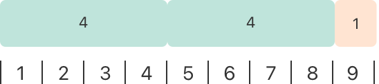

运算符是检查、改变、合并值的特殊符号或短语。例如，加号（+）将两个数相加（如 let i = 1 + 2）。更复杂的运算例子包括逻辑与运算符 &&（如 if enteredDoorCode && passedRetinaScan）。
Swift 所支持运算符你可能在别的语言比如 C 语言里已经认识了，同时为了减少常见编码错误对它们做了部分改进。如：赋值符（=）不再有返回值，这样就消除了手误将判等运算符（==）写成赋值符导致代码错误的缺陷。算术运算符（+，-，*，/，% 等）的结果会被检测并禁止值溢出，以此来避免保存变量时由于变量大于或小于其类型所能承载的范围时导致的异常结果。当然允许你使用 Swift 的溢出运算符来实现溢出。详情参见 溢出运算符。
Swift 还提供了 C 语言没有的区间运算符，例如 a..<b 或 a...b，这方便我们表达一个区间内的数值。
本章节只描述了 Swift 中的基本运算符，高级运算符 这章会包含 Swift 中的高级运算符，及如何自定义运算符，及如何进行自定义类型的运算符重载。
运算符分为一元、二元和三元运算符:
-a）。一元运算符分前置运算符和后置运算符，前置运算符需紧跟在操作对象之前（如 !b），后置运算符需紧跟在操作对象之后（如 c!）。2 + 3），是中置的，因为它们出现在两个操作对象之间。a ? b : c）。受运算符影响的值叫操作数，在表达式 1 + 2 中，加号 + 是二元运算符，它的两个操作数是值 1 和 2。
赋值运算符（a = b），表示用 b 的值来初始化或更新 a 的值：
let b = 10var a = 5a = b// a 现在等于 10如果赋值的右边是一个多元组，它的元素可以马上被分解成多个常量或变量：
xxxxxxxxxxlet (x, y) = (1, 2)// 现在 x 等于 1，y 等于 2与 C 语言和 Objective-C 不同，Swift 的赋值操作并不返回任何值。所以下面语句是无效的：
xxxxxxxxxxif x = y { // 此句错误，因为 x = y 并不返回任何值}通过将 if x = y 标记为无效语句，Swift 能帮你避免把 （==）错写成（=）这类错误的出现。
Swift 中所有数值类型都支持了基本的四则算术运算符：
+）-）*）/）xxxxxxxxxx1 + 2 // 等于 35 - 3 // 等于 22 * 3 // 等于 610.0 / 2.5 // 等于 4.0与 C 语言和 Objective-C 不同的是，Swift 默认情况下不允许在数值运算中出现溢出情况。但是你可以使用 Swift 的溢出运算符来实现溢出运算（如 a &+ b）。详情参见 溢出运算符。
加法运算符也可用于 String 的拼接：
xxxxxxxxxx"hello, " + "world" // 等于 "hello, world"求余运算符（a % b）是计算 b 的多少倍刚刚好可以容入 a，返回多出来的那部分（余数）。
注意
求余运算符（
%）在其他语言也叫取模运算符。但是严格说来，我们看该运算符对负数的操作结果，「求余」比「取模」更合适些。
我们来谈谈取余是怎么回事，计算 9 % 4，你先计算出 4 的多少倍会刚好可以容入 9 中：

你可以在 9 中放入两个 4，那余数是 1（用橙色标出）。
在 Swift 中可以表达为：
xxxxxxxxxx9 % 4 // 等于 1为了得到 a % b 的结果，% 计算了以下等式，并输出 余数作为结果：
xxxxxxxxxxa = (b × 倍数) + 余数
当 倍数取最大值的时候，就会刚好可以容入 a 中。
把 9 和 4 代入等式中，我们得 1：
xxxxxxxxxx9 = (4 × 2) + 1
同样的方法，我们来计算 -9 % 4：
xxxxxxxxxx-9 % 4 // 等于 -1把 -9 和 4 代入等式，-2 是取到的最大整数：
xxxxxxxxxx-9 = (4 × -2) + -1
余数是 -1。
在对负数 b 求余时，b 的符号会被忽略。这意味着 a % b 和 a % -b 的结果是相同的。
数值的正负号可以使用前缀 -（即一元负号符）来切换：
xxxxxxxxxxlet three = 3let minusThree = -three // minusThree 等于 -3let plusThree = -minusThree // plusThree 等于 3, 或 "负负3"一元负号符（-）写在操作数之前，中间没有空格。
一元正号符（+）不做任何改变地返回操作数的值：
xxxxxxxxxxlet minusSix = -6let alsoMinusSix = +minusSix // alsoMinusSix 等于 -6虽然一元正号符什么都不会改变，但当你在使用一元负号来表达负数时，你可以使用一元正号来表达正数，如此你的代码会具有对称美。
如同 C 语言，Swift 也提供把其他运算符和赋值运算（=）组合的组合赋值运算符，组合加运算（+=）是其中一个例子：
xxxxxxxxxxvar a = 1a += 2// a 现在是 3表达式 a += 2 是 a = a + 2 的简写，一个组合加运算就是把加法运算和赋值运算组合成进一个运算符里，同时完成两个运算任务。
注意
复合赋值运算没有返回值，
let b = a += 2这类代码是错误。这不同于上面提到的自增和自减运算符。
更多 Swift 标准库运算符的信息，请看 运算符声明。
Swift 支持以下的比较运算符：
a == b）a != b）a > b）a < b）a >= b）a <= b）注意
Swift 也提供恒等（
===）和不恒等（!==）这两个比较符来判断两个对象是否引用同一个对象实例。更多细节在 类与结构 章节的 Identity Operators 部分。
每个比较运算都返回了一个标识表达式是否成立的布尔值：
xxxxxxxxxx1 == 1 // true, 因为 1 等于 12 != 1 // true, 因为 2 不等于 12 > 1 // true, 因为 2 大于 11 < 2 // true, 因为 1 小于21 >= 1 // true, 因为 1 大于等于 12 <= 1 // false, 因为 2 并不小于等于 1比较运算多用于条件语句，如 if 条件：
xxxxxxxxxxlet name = "world"if name == "world" { print("hello, world")} else { print("I'm sorry \(name), but I don't recognize you")}// 输出“hello, world", 因为 `name` 就是等于 "world”关于 if 语句，请看 控制流。
如果两个元组的元素相同，且长度相同的话，元组就可以被比较。比较元组大小会按照从左到右、逐值比较的方式，直到发现有两个值不等时停止。如果所有的值都相等，那么这一对元组我们就称它们是相等的。例如：
xxxxxxxxxx(1, "zebra") < (2, "apple") // true，因为 1 小于 2(3, "apple") < (3, "bird") // true，因为 3 等于 3，但是 apple 小于 bird(4, "dog") == (4, "dog") // true，因为 4 等于 4，dog 等于 dog在上面的例子中，你可以看到，在第一行中从左到右的比较行为。因为 1 小于 2，所以 (1, "zebra") 小于 (2, "apple")，不管元组剩下的值如何。所以 "zebra" 大于 "apple" 对结果没有任何影响，因为元组的比较结果已经被第一个元素决定了。不过，当元组的第一个元素相同时候，第二个元素将会用作比较-第二行和第三行代码就发生了这样的比较。
当元组中的元素都可以被比较时，你也可以使用这些运算符来比较它们的大小。例如，像下面展示的代码，你可以比较两个类型为 (String, Int) 的元组，因为 Int 和 String 类型的值可以比较。相反，Bool 不能被比较，也意味着存有布尔类型的元组不能被比较。
xxxxxxxxxx("blue", -1) < ("purple", 1) // 正常，比较的结果为 true("blue", false) < ("purple", true) // 错误，因为 < 不能比较布尔类型注意
Swift 标准库只能比较七个以内元素的元组比较函数。如果你的元组元素超过七个时，你需要自己实现比较运算符。
三元运算符的特殊在于它是有三个操作数的运算符，它的形式是 问题 ? 答案 1 : 答案 2。它简洁地表达根据 问题成立与否作出二选一的操作。如果 问题 成立，返回 答案 1 的结果；反之返回 答案 2 的结果。
三元运算符是以下代码的缩写形式：
xxxxxxxxxxif question { answer1} else { answer2}这里有个计算表格行高的例子。如果有表头，那行高应比内容高度要高出 50 点；如果没有表头，只需高出 20 点：
xxxxxxxxxxlet contentHeight = 40let hasHeader = truelet rowHeight = contentHeight + (hasHeader ? 50 : 20)// rowHeight 现在是 90上面的写法比下面的代码更简洁：
xxxxxxxxxxlet contentHeight = 40let hasHeader = truevar rowHeight = contentHeightif hasHeader { rowHeight = rowHeight + 50} else { rowHeight = rowHeight + 20}// rowHeight 现在是 90第一段代码例子使用了三元运算，所以一行代码就能让我们得到正确答案。这比第二段代码简洁得多，无需将 rowHeight 定义成变量，因为它的值无需在 if 语句中改变。
三元运算为二选一场景提供了一个非常便捷的表达形式。不过需要注意的是，滥用三元运算符会降低代码可读性。所以我们应避免在一个复合语句中使用多个三元运算符。
空合运算符（a ?? b）将对可选类型 a 进行空判断，如果 a 包含一个值就进行解包，否则就返回一个默认值 b。表达式 a 必须是 Optional 类型。默认值 b 的类型必须要和 a 存储值的类型保持一致。
空合运算符是对以下代码的简短表达方法：
xxxxxxxxxxa != nil ? a! : b上述代码使用了三元运算符。当可选类型 a 的值不为空时，进行强制解包（a!），访问 a 中的值；反之返回默认值 b。无疑空合运算符（??）提供了一种更为优雅的方式去封装条件判断和解包两种行为，显得简洁以及更具可读性。
注意
如果
a为非空值（non-nil），那么值b将不会被计算。这也就是所谓的短路求值。
下文例子采用空合运算符，实现了在默认颜色名和可选自定义颜色名之间抉择：
xlet defaultColorName = "red"var userDefinedColorName: String? //默认值为 nil
var colorNameToUse = userDefinedColorName ?? defaultColorName// userDefinedColorName 的值为空，所以 colorNameToUse 的值为 "red"userDefinedColorName 变量被定义为一个可选的 String 类型，默认值为 nil。由于 userDefinedColorName 是一个可选类型，我们可以使用空合运算符去判断其值。在上一个例子中，通过空合运算符为一个名为 colorNameToUse 的变量赋予一个字符串类型初始值。
由于 userDefinedColorName 值为空，因此表达式 userDefinedColorName ?? defaultColorName 返回 defaultColorName 的值，即 red。
如果你分配一个非空值（non-nil）给 userDefinedColorName，再次执行空合运算，运算结果为封包在 userDefinedColorName 中的值，而非默认值。
xxxxxxxxxxuserDefinedColorName = "green"colorNameToUse = userDefinedColorName ?? defaultColorName// userDefinedColorName 非空，因此 colorNameToUse 的值为 "green"Swift 提供了几种方便表达一个区间的值的区间运算符。
闭区间运算符（a...b）定义一个包含从 a 到 b（包括 a 和 b）的所有值的区间。a 的值不能超过 b。
闭区间运算符在迭代一个区间的所有值时是非常有用的，如在 for-in 循环中：
xxxxxxxxxxfor index in 1...5 { print("\(index) * 5 = \(index * 5)")}// 1 * 5 = 5// 2 * 5 = 10// 3 * 5 = 15// 4 * 5 = 20// 5 * 5 = 25关于 for-in 循环，请看 控制流。
半开区间运算符（a..<b）定义一个从 a 到 b 但不包括 b 的区间。
之所以称为半开区间，是因为该区间包含第一个值而不包括最后的值。
半开区间的实用性在于当你使用一个从 0 开始的列表（如数组）时，非常方便地从0数到列表的长度。
xxxxxxxxxxlet names = ["Anna", "Alex", "Brian", "Jack"]let count = names.countfor i in 0..<count { print("第 \(i + 1) 个人叫 \(names[i])")}// 第 1 个人叫 Anna// 第 2 个人叫 Alex// 第 3 个人叫 Brian// 第 4 个人叫 Jack数组有 4 个元素，但 0..<count 只数到3（最后一个元素的下标），因为它是半开区间。关于数组，请查阅 数组。
闭区间操作符有另一个表达形式，可以表达往一侧无限延伸的区间 —— 例如，一个包含了数组从索引 2 到结尾的所有值的区间。在这些情况下，你可以省略掉区间操作符一侧的值。这种区间叫做单侧区间，因为操作符只有一侧有值。例如：
xxxxxxxxxxfor name in names[2...] { print(name)}// Brian// Jack
for name in names[...2] { print(name)}// Anna// Alex// Brian半开区间操作符也有单侧表达形式，附带上它的最终值。就像你使用区间去包含一个值，最终值并不会落在区间内。例如：
xxxxxxxxxxfor name in names[..<2] { print(name)}// Anna// Alex单侧区间不止可以在下标里使用，也可以在别的情境下使用。你不能遍历省略了初始值的单侧区间，因为遍历的开端并不明显。你可以遍历一个省略最终值的单侧区间；然而，由于这种区间无限延伸的特性，请保证你在循环里有一个结束循环的分支。你也可以查看一个单侧区间是否包含某个特定的值，就像下面展示的那样。
xxxxxxxxxxlet range = ...5range.contains(7) // falserange.contains(4) // truerange.contains(-1) // true逻辑运算符的操作对象是逻辑布尔值。Swift 支持基于 C 语言的三个标准逻辑运算。
!a）a && b）a || b）逻辑非运算符（!a）对一个布尔值取反，使得 true 变 false，false 变 true。
它是一个前置运算符，需紧跟在操作数之前，且不加空格。读作 非 a ，例子如下：
xxxxxxxxxxlet allowedEntry = falseif !allowedEntry { print("ACCESS DENIED")}// 输出“ACCESS DENIED”if !allowedEntry 语句可以读作「如果非 allowedEntry」，接下一行代码只有在「非 allowedEntry」为 true，即 allowEntry 为 false 时被执行。
在示例代码中，小心地选择布尔常量或变量有助于代码的可读性，并且避免使用双重逻辑非运算，或混乱的逻辑语句。
逻辑与运算符（a && b）表达了只有 a 和 b 的值都为 true 时，整个表达式的值才会是 true。
只要任意一个值为 false，整个表达式的值就为 false。事实上，如果第一个值为 false，那么是不去计算第二个值的，因为它已经不可能影响整个表达式的结果了。这被称做短路计算（short-circuit evaluation）。
以下例子，只有两个 Bool 值都为 true 的时候才允许进入 if：
xxxxxxxxxxlet enteredDoorCode = truelet passedRetinaScan = falseif enteredDoorCode && passedRetinaScan { print("Welcome!")} else { print("ACCESS DENIED")}// 输出“ACCESS DENIED”逻辑或运算符（a || b）是一个由两个连续的 | 组成的中置运算符。它表示了两个逻辑表达式的其中一个为 true，整个表达式就为 true。
同逻辑与运算符类似，逻辑或也是「短路计算」的，当左端的表达式为 true 时，将不计算右边的表达式了，因为它不可能改变整个表达式的值了。
以下示例代码中，第一个布尔值（hasDoorKey）为 false，但第二个值（knowsOverridePassword）为 true，所以整个表达是 true，于是允许进入：
xxxxxxxxxxlet hasDoorKey = falselet knowsOverridePassword = trueif hasDoorKey || knowsOverridePassword { print("Welcome!")} else { print("ACCESS DENIED")}// 输出“Welcome!”我们可以组合多个逻辑运算符来表达一个复合逻辑：
xxxxxxxxxxif enteredDoorCode && passedRetinaScan || hasDoorKey || knowsOverridePassword { print("Welcome!")} else { print("ACCESS DENIED")}// 输出“Welcome!”这个例子使用了含多个 && 和 || 的复合逻辑。但无论怎样，&& 和 || 始终只能操作两个值。所以这实际是三个简单逻辑连续操作的结果。我们来解读一下：
如果我们输入了正确的密码并通过了视网膜扫描，或者我们有一把有效的钥匙，又或者我们知道紧急情况下重置的密码，我们就能把门打开进入。
前两种情况，我们都不满足，所以前两个简单逻辑的结果是 false，但是我们是知道紧急情况下重置的密码的，所以整个复杂表达式的值还是 true。
注意
Swift 逻辑操作符
&&和||是左结合的，这意味着拥有多元逻辑操作符的复合表达式优先计算最左边的子表达式。
为了一个复杂表达式更容易读懂，在合适的地方使用括号来明确优先级是很有效的，虽然它并非必要的。在上个关于门的权限的例子中，我们给第一个部分加个括号，使它看起来逻辑更明确：
xxxxxxxxxxif (enteredDoorCode && passedRetinaScan) || hasDoorKey || knowsOverridePassword { print("Welcome!")} else { print("ACCESS DENIED")}// 输出“Welcome!”这括号使得前两个值被看成整个逻辑表达中独立的一个部分。虽然有括号和没括号的输出结果是一样的，但对于读代码的人来说有括号的代码更清晰。可读性比简洁性更重要，请在可以让你代码变清晰的地方加个括号吧！